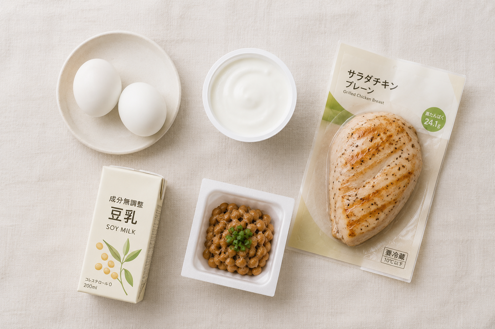

PROTEIN
体重は落ちたのに、
やつれて見える理由。
式の前に痩せたのに写真がよくない。この原因のほとんどは、たんぱく質を落としたことです。減った分が脂肪ではなく、筋肉と肌から出ています。

目安は体重1kgあたり1g。体重50kgなら1日50gです。3食に分けると1食あたり15〜20g。これを下回る日が続くと、肌のハリと髪の質から先に落ちます。
何をどれだけ食べればいいか
数字だけ見ても分からないので、食品に換算します。1食20gの目安です。
| 食品 | 量 | たんぱく質 |
|---|---|---|
| 鶏むね肉 | 100g | 約22g |
| 鮭 | 1切れ（80g） | 約18g |
| 卵 | 2個 | 約12g |
| 納豆 | 1パック | 約8g |
| ギリシャヨーグルト | 100g | 約10g |
| 豆腐 | 半丁（150g） | 約10g |
1品では届かないことが多いので、組み合わせが必要です。卵2個＋納豆1パックで20g。これなら朝でも用意できます。
やってはいけない減らし方
- 朝を抜く。1日3回に分けないと吸収しきれません。1食に集中させても意味がありません
- サラダだけにする。野菜にたんぱく質はほぼ入っていません。体重は落ちますが、写真は悪くなります
- 炭水化物を完全に抜く。たんぱく質がエネルギーとして消費されてしまい、結果的に足りなくなります
- プロテインだけで済ませる。粉は補助です。ビタミンとミネラルが不足します
作れない日にどうするか
準備が本格化すると、まず削られるのが食事です。ここを我慢で埋めようとすると必ず崩れるので、作らなくても20g入るものを用意しておくのが現実的です。

SONOKO お試し献立
30%OFF1週間分の献立セット。何を食べるか考える手間そのものを外せるので、判断に疲れている時期に向いています。現在コラボセールで8週間セットが30%OFF（終了時期未定）。まず1週間分で味を確かめてから決められます。
お試しセットを見る ＞コンビニで買う場合
選択肢はあります。サラダチキン（約20g）、ゆで卵2個（約12g）、ギリシャヨーグルト（約10g）、豆乳（約7g）。おにぎりとサラダの組み合わせだけは避けてください。ここにたんぱく質がほぼ入っていません。
次に読む
食事全体の考え方は食事で整える体づくり、宅配食の比較は宅配食の選び方、時期ごとの進め方は3ヶ月プランに。
さらに詳しく